Crab SED v6 64748 reselect44 - Scheme R - Double-Rayleigh PSF - Analytic B_on
Scheme R - Double-Rayleigh PSF with Analytic B_on. v6 chain for v6_64748_nhit100_reselect44_split56_miss030_double_rayleigh_scheme_R_fixed712979_analytic_bon, reusing the v6_64748_nhit100_highEplus1_split56 nominal inputs and Stage C event reduction. The first Nhit bin is [100,200); >=6 remains a diagnostic tail outside Stage F/G.
Executive Check
| Gate | Status | Evidence |
|---|---|---|
| run id | pass | v6_64748_nhit100_reselect44_split56_miss030_double_rayleigh |
| Nhit binning | pass | [100,200) |
| tail policy | pass | 7 >=6 tail cells, 0 included |
| selector | pass | 44 fit cells; 10 forced in, 5 forced out |
| selector 75/90 swap | pass | cell 75 included=True; cell 90 included=False; total=44 |
| Stage C files | pass | 3,969 processed, missing time 0, entry mismatch 0 |
| Stage E signal | pass | formal sigma 63.597 |
| Stage F fit | pass | preferred logpar |
| Stage G points | pass | 7 Nhit points, 11 predE points |
| fixed containment contract | pass | derived=0.7129790300890827; expected=0.7129790300890827; applications=1; downstream=1.0 |
| metadata pollution | passed | 0 legacy main-input path/token offenders |
Slurm Jobs
All heavy recomputation stages are intended to run through the Slurm dependency chain. This table is populated from PIPELINE_JOB_IDS when available.
| Stage | Job | State | Elapsed | Exit | Name |
|---|---|---|---|---|---|
| analytic_R1_stage_d_g | 65188 | COMPLETED | 00:03:38 | 0:0 | v6_64748_R_analytic |
| analytic_R2_stage_d_g | 65189 | COMPLETED | 00:03:38 | 0:0 | v6_64748_R_analytic |
| report | 65191 | RUNNING | 00:02:46 | 0:0 | v6_64748_R_analytic_report |
Inputs And Outputs
The main chain uses the 64748 observation eval root and its recovered-time tree. The response, PSF, aperture response, fit, and SED products are all under the new run namespace.
| Field | Value |
|---|---|
| Experiment id | v6_64748_nhit100_reselect44_split56_miss030_double_rayleigh_scheme_R_fixed712979_analytic_bon |
| Scheme | R - Scheme R - Double-Rayleigh PSF with Analytic B_on |
| Input commit SHA | 39e49216d66ba188d8e5ec535e6cd23e7ca0b7eb |
| Analysis response | /mnt/mydisk/server/projects/energy_reconstruction/apply/output/stage_e_v6_64748_nhit100_reselect44_split56_miss030_fixed712979_rayleigh_annnorm/response_v6_64748_nhit100_reselect44_split56_miss030_fixed712979_rayleigh.npz |
| Observation root | /mnt/mydisk/WCDA_observation_eval_64748 |
| Recovered time root | /mnt/mydisk/WCDA_observation_eval_64748/recovered_time |
| MC candidate cache | /mnt/mydisk/WCDA_simulation_binned_response_v6_64748_nhit100_highEplus1_split56_candidate |
| Model run dir | /mnt/mydisk/server/projects/energy_reconstruction/runs/theta_recoxy_position_embed_noemax_no_core_cut_64748 |
| Fit selector | ../config/cell_selector_v6_64748_nhit100_reselect44_split56_miss030_fit.csv |
| Stage C input entries | 254,436,994 |
| After configured-cell selection | 113,938,262 |
| Stage | Primary output |
|---|---|
| Prepare/cache | /mnt/mydisk/WCDA_simulation_binned_response_v6_64748_nhit100_highEplus1_split56_candidate |
| Stage A response | apply/output/stage_a_v6_64748_nhit100_highEplus1_split56 (reused) |
| Stage B PSF | apply/output/stage_b_v6_64748_nhit100_reselect44_split56_miss030_double_rayleigh |
| Analysis response | apply/output/stage_e_v6_64748_nhit100_reselect44_split56_miss030_fixed712979_rayleigh_annnorm |
| Stage C observation | apply/output/stage_c_v6_64748_nhit100_highEplus1_split56 (reused) |
| Stage D background | apply/output/stage_d_v6_64748_nhit100_reselect44_split56_miss030_double_rayleigh_annnorm |
| Stage E signal | apply/output/stage_e_v6_64748_nhit100_reselect44_split56_miss030_double_rayleigh_analytic_bon_containment1_annnorm/runs/v6_64748_nhit100_reselect44_split56_miss030_double_rayleigh_analytic_bon_stage_e_containment1_annnorm |
| Stage F fit | apply/output/stage_f_v6_64748_nhit100_reselect44_split56_miss030_double_rayleigh_scheme_R_fixed712979_analytic_bon/runs/v6_64748_nhit100_reselect44_split56_miss030_double_rayleigh_scheme_R_fixed712979_analytic_bon_stage_f |
| Stage G SED | apply/output/stage_g_v6_64748_nhit100_reselect44_split56_miss030_double_rayleigh_scheme_R_fixed712979_analytic_bon/runs/v6_64748_nhit100_reselect44_split56_miss030_double_rayleigh_scheme_R_fixed712979_analytic_bon_stage_g |
Selector Rule
preserve original MC-ridge fit cells; add at most one adjacent higher predE bin per Nhit; apply explicit include/exclude overrides; never include >=6 tail cells in Stage F/G
| Nhit | Status | Candidate | MC count | PSF gate | Reasons |
|---|---|---|---|---|---|
[100,200) | included_highEplus1 | [3.25,3.5) cell 4 | 54,366 | 1 | pass |
[200,300) | included_highEplus1 | [3.75,4.0) cell 19 | 17,909 | 1 | pass |
[300,500) | rejected_highEplus1_probe | [5.5,6) cell 38 | 13,883 | 0 | containment_warning |
[500,800) | diagnostic_tail_only | >=6 cell 52 | 158 | 0 | tail_ge6_excluded_from_main_fit |
[800,1100) | rejected_highEplus1_probe | [5.5,6) cell 64 | 3,211 | 0 | containment_warning |
[1100,2000) | rejected_highEplus1_probe | [4.75,5.0) cell 75 | 2,279 | 0 | valid_events_le_0;effective_events_lt_200;core_fit_effective_events_lt_200;theta_missing_mass_gt_0.3;containment_warning;angle_check_warning |
[2000,3000) | diagnostic_tail_only | >=6 cell 91 | 0 | 0 | tail_ge6_excluded_from_main_fit |
Included highEplus1 cells
| Cell | Nhit | predE | MC count | PSF reason |
|---|---|---|---|---|
| 4 | [100,200) | [3.25,3.5) | 54,366 | pass |
| 19 | [200,300) | [3.75,4.0) | 17,909 | pass |
Rejected highEplus1 probes
| Cell | Nhit | predE | MC count | Reason |
|---|---|---|---|---|
| 38 | [300,500) | [5.5,6) | 13,883 | containment_warning |
| 64 | [800,1100) | [5.5,6) | 3,211 | containment_warning |
Explicit selector overrides
| Action | Cell | Nhit | predE | PSF status |
|---|---|---|---|---|
| include | 5 | [100,200) | [3.5,3.75) | containment_warning |
| include | 6 | [100,200) | [3.75,4.0) | containment_warning |
| include | 20 | [200,300) | [4.0,4.25) | pass |
| include | 21 | [200,300) | [4.25,4.5) | containment_warning |
| include | 34 | [300,500) | [4.25,4.5) | pass |
| include | 47 | [500,800) | [4.25,4.5) | pass |
| include | 48 | [500,800) | [4.5,4.75) | pass |
| include | 61 | [800,1100) | [4.5,4.75) | pass |
| include | 62 | [800,1100) | [4.75,5.0) | pass |
| include | 75 | [1100,2000) | [4.75,5.0) | valid_events_le_0;effective_events_lt_200;core_fit_effective_events_lt_200;theta_missing_mass_gt_0.3;containment_warning;angle_check_warning |
| exclude | 37 | [300,500) | [5,5.5) | containment_warning |
| exclude | 50 | [500,800) | [5,5.5) | containment_warning |
| exclude | 51 | [500,800) | [5.5,6) | containment_warning |
| exclude | 63 | [800,1100) | [5,5.5) | pass |
| exclude | 90 | [2000,3000) | [5.5,6) | valid_events_le_0;effective_events_lt_200;core_fit_effective_events_lt_200;theta_missing_mass_gt_0.3;containment_warning;angle_check_warning |
Analytic B_on Contract
0.1 deg map still fits the annulus-normalized quadratic background shape, but active B_on is the closed-form integral over the true centered disk:
scale/h^2 * [pi r^2 c0 + pi r^4 (cxx+cyy)/4]. Event-level N_on remains a continuous spherical-distance cut. All 44 selector-cell fitted surfaces are positive inside their on apertures.The response remains strict Scheme R: Aeff_R=0.7129790300890827*Aeff_nominal, applied exactly once, with downstream containment equal to 1.
Four-Branch Controlled Comparison
Legacy versus analytic within the same PSF isolates the aperture-integration algorithm. Analytic 1R versus analytic 2R isolates the PSF/aperture model under one fixed response and one continuous background integral.
| Branch | B_on integration | phi0 | alpha | beta | chi2/ndof | max |pull| | total obs/pass5 |
|---|---|---|---|---|---|---|---|
| Scheme R 1R legacy | pixel-center | 2.5221665e-12 | 2.774428 | 0.107199 | 516.2144/41 | 9.293485 | 1.208233 |
| Scheme R 1R analytic B_on | analytic-quadratic | 2.5271059e-12 | 2.729860 | 0.114046 | 405.2718/41 | 9.563395 | 1.184235 |
| Scheme R 2R legacy | pixel-center | 2.3121331e-12 | 2.776108 | 0.059441 | 521.4115/41 | 8.759763 | 1.314755 |
| Scheme R 2R analytic B_on | analytic-quadratic | 2.4265421e-12 | 2.761285 | 0.120183 | 452.5746/41 | 8.849398 | 1.135584 |
Cell 1 Diagnostic
| Branch | N_on | B_on | excess | LogPar pull |
|---|---|---|---|---|
| Scheme R 1R legacy | 1.69e+05 | 1.665e+05 | 2225.278 | -8.4813 |
| Scheme R 1R analytic B_on | 1.69e+05 | 1.641e+05 | 4602.733 | -2.7927 |
| Scheme R 2R legacy | 1.61e+05 | 1.551e+05 | 6296.260 | -4.1831 |
| Scheme R 2R analytic B_on | 1.61e+05 | 1.568e+05 | 4590.492 | -2.8480 |
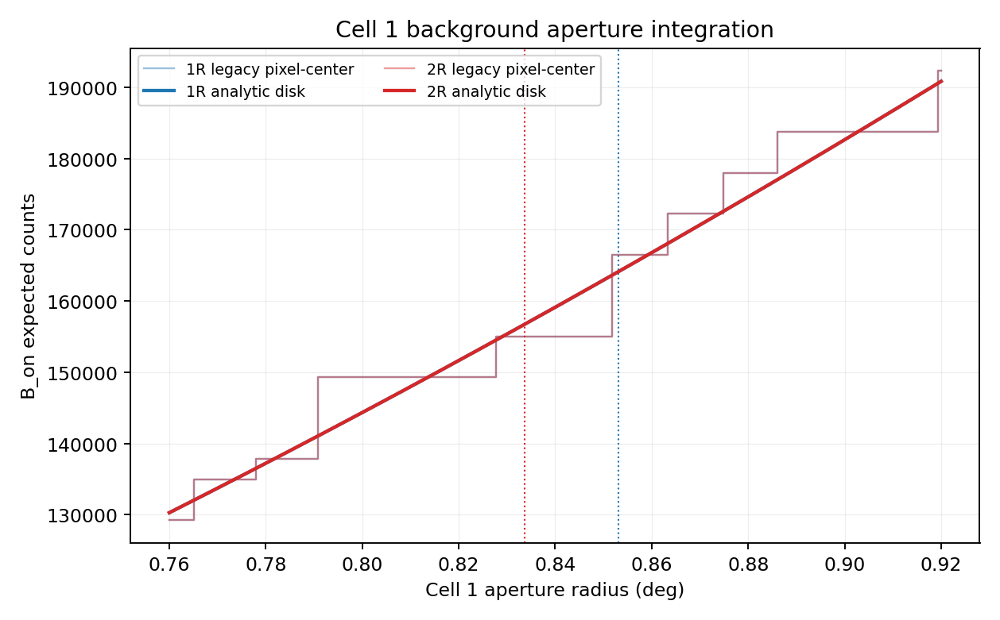
Large-Pull Migration
| Cell | Scheme R 1R legacy | Scheme R 1R analytic B_on | Scheme R 2R legacy | Scheme R 2R analytic B_on |
|---|---|---|---|---|
| 70 | -9.2935 | -9.5634 | -8.4144 | -8.8494 |
| 6 | -3.8080 | -3.9836 | -8.7598 | -8.3406 |
| 1 | -8.4813 | -2.7927 | -4.1831 | -2.8480 |
| 2 | 4.7502 | 2.0706 | 7.7343 | 1.7341 |
| 16 | 7.4087 | 6.4093 | 4.1403 | 6.3127 |
| 28 | -6.3155 | -4.8982 | -7.3118 | -4.7526 |
| 74 | 5.2064 | 5.0391 | 4.4051 | 4.7896 |
| 29 | 1.7559 | 2.9737 | 5.2041 | 4.0707 |
All 44 cells: B_on, excess shifts, and active R-2R pull
| Cell | R1 legacy B | R1 analytic B | R2 legacy B | R2 analytic B | R1 delta excess | R2 delta excess | R2 analytic pull |
|---|---|---|---|---|---|---|---|
| 1 | 1.665e+05 | 1.641e+05 | 1.551e+05 | 1.568e+05 | 2377.455 | -1705.769 | -2.8480 |
| 2 | 1.588e+05 | 1.615e+05 | 1.447e+05 | 1.502e+05 | -2672.131 | -5469.213 | 1.7341 |
| 3 | 35548.465 | 35181.924 | 30766.038 | 30580.059 | 366.541 | 185.979 | 0.8429 |
| 4 | 30014.906 | 29453.826 | 25237.037 | 24740.688 | 561.080 | 496.349 | -1.3581 |
| 5 | 22871.378 | 23026.298 | 22218.195 | 22213.936 | -154.920 | 4.260 | -2.9757 |
| 6 | 14463.991 | 14491.182 | 19217.967 | 19138.498 | -27.191 | 79.469 | -8.3406 |
| 15 | 18862.186 | 20320.166 | 18862.186 | 19626.129 | -1457.980 | -763.943 | -2.0670 |
| 16 | 9432.050 | 9720.900 | 9432.050 | 9234.717 | -288.850 | 197.333 | 6.3127 |
| 17 | 6761.659 | 6556.347 | 5409.753 | 5192.106 | 205.312 | 217.646 | 4.1827 |
| 18 | 6825.529 | 6686.222 | 5962.166 | 6061.212 | 139.307 | -99.046 | 0.6359 |
| 19 | 6511.211 | 6403.161 | 5820.043 | 5843.426 | 108.051 | -23.383 | -2.9758 |
| 20 | 3953.555 | 3949.032 | 4424.861 | 4390.570 | 4.523 | 34.291 | -3.4924 |
| 21 | 1433.199 | 1439.779 | 2241.008 | 2240.736 | -6.580 | 0.272 | 3.5408 |
| 28 | 2419.124 | 2449.913 | 2419.124 | 2416.824 | -30.790 | 2.299 | -4.7526 |
| 29 | 3981.489 | 4023.362 | 3981.489 | 4209.730 | -41.873 | -228.241 | 4.0707 |
| 30 | 3077.159 | 3042.722 | 3077.159 | 2921.928 | 34.437 | 155.231 | 4.4729 |
| 31 | 1656.928 | 1693.003 | 1077.050 | 1130.991 | -36.075 | -53.941 | -0.0365 |
| 32 | 2269.660 | 2278.329 | 1789.531 | 1860.509 | -8.669 | -70.978 | 1.9560 |
| 33 | 2004.731 | 2025.527 | 1972.354 | 1957.297 | -20.795 | 15.057 | -1.0413 |
| 34 | 943.190 | 935.355 | 991.913 | 987.019 | 7.835 | 4.894 | 0.9156 |
| 42 | 241.345 | 273.508 | 241.345 | 221.721 | -32.163 | 19.625 | -2.9479 |
| 43 | 893.725 | 903.159 | 893.725 | 867.042 | -9.434 | 26.683 | -0.2508 |
| 44 | 747.042 | 713.876 | 747.042 | 686.741 | 33.165 | 60.301 | -0.6949 |
| 45 | 329.221 | 312.791 | 239.422 | 234.912 | 16.429 | 4.510 | 0.9116 |
| 46 | 351.248 | 357.195 | 202.456 | 209.346 | -5.947 | -6.891 | 3.3649 |
| 47 | 253.395 | 252.926 | 306.907 | 300.385 | 0.469 | 6.522 | -0.9485 |
| 48 | 117.346 | 118.457 | 110.302 | 110.287 | -1.112 | 0.014 | -0.6813 |
| 56 | 27.078 | 23.852 | 27.078 | 23.852 | 3.226 | 3.226 | -2.7057 |
| 57 | 148.657 | 141.457 | 99.107 | 120.875 | 7.200 | -21.768 | -3.2026 |
| 58 | 184.527 | 179.572 | 184.527 | 159.541 | 4.956 | 24.986 | -0.0515 |
| 59 | 91.149 | 82.922 | 68.360 | 63.121 | 8.226 | 5.238 | 1.9182 |
| 60 | 78.960 | 78.855 | 15.386 | 18.588 | 0.105 | -3.202 | 4.1162 |
| 61 | 23.643 | 23.524 | 23.643 | 23.524 | 0.118 | 0.118 | 1.1957 |
| 62 | 8.899 | 8.833 | 9.566 | 9.695 | 0.065 | -0.128 | 0.3554 |
| 70 | 6.075 | 5.999 | 6.075 | 5.999 | 0.076 | 0.076 | -8.8494 |
| 71 | 42.889 | 43.212 | 32.168 | 37.455 | -0.323 | -5.287 | -3.3064 |
| 72 | 62.698 | 63.293 | 62.698 | 57.503 | -0.595 | 5.195 | 1.9485 |
| 73 | 40.427 | 45.516 | 40.427 | 38.090 | -5.089 | 2.337 | 4.0804 |
| 74 | 18.377 | 19.003 | 12.250 | 12.577 | -0.626 | -0.327 | 4.7896 |
| 75 | 195.994 | 195.069 | 195.994 | 195.069 | 0.925 | 0.925 | 1.2910 |
| 86 | 1.549 | 1.205 | 1.549 | 1.205 | 0.344 | 0.344 | 1.1585 |
| 87 | 5.063 | 4.944 | 5.063 | 4.944 | 0.120 | 0.120 | 0.6269 |
| 88 | 15.351 | 15.054 | 15.351 | 14.985 | 0.297 | 0.366 | -0.2770 |
| 89 | 25.696 | 28.386 | 25.696 | 22.910 | -2.689 | 2.786 | 1.1546 |
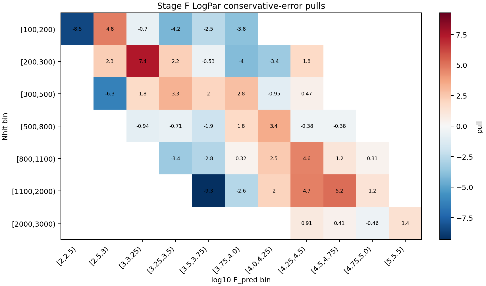
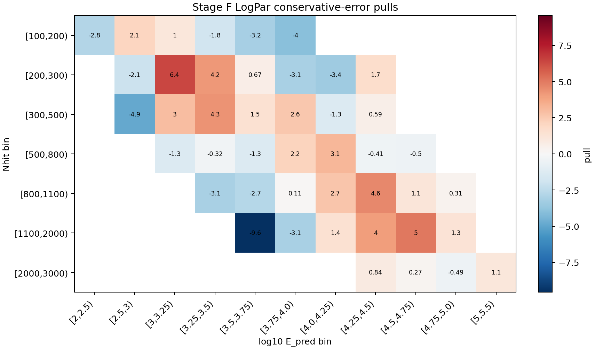
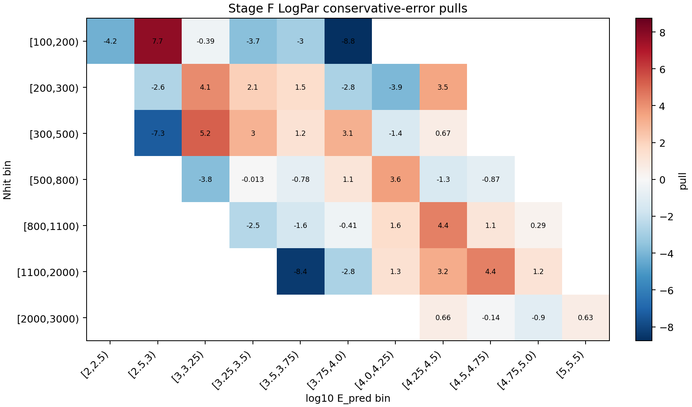
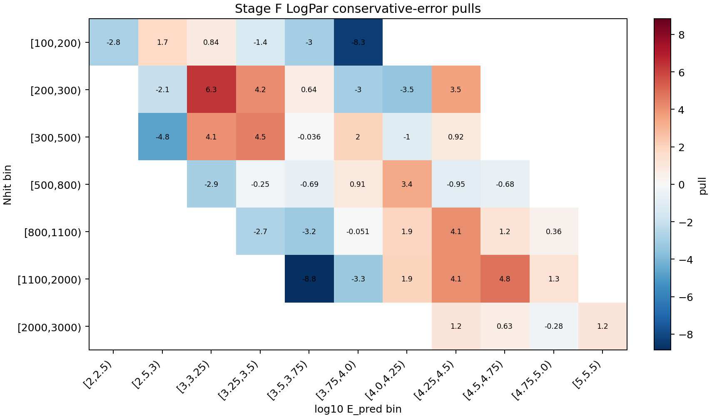
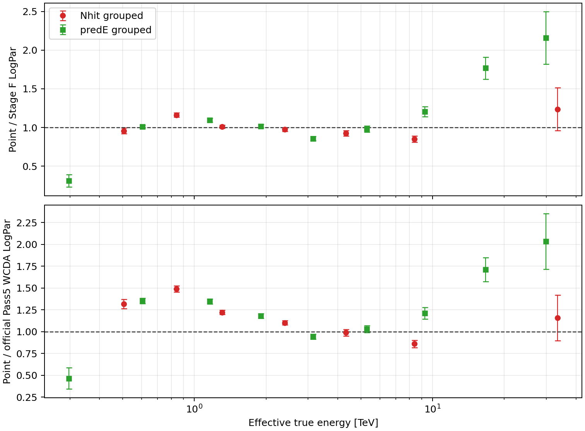
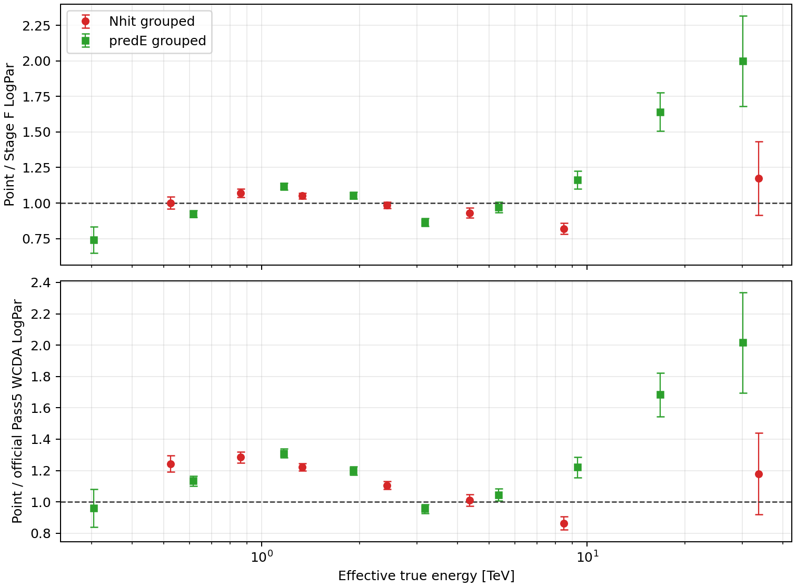
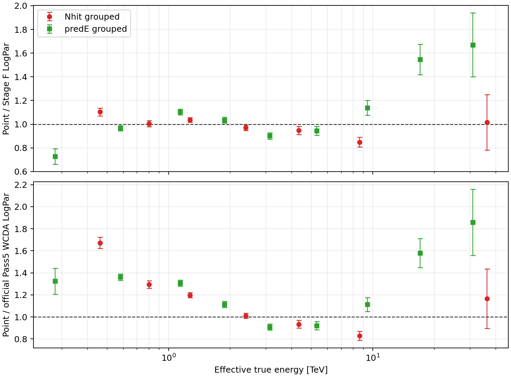
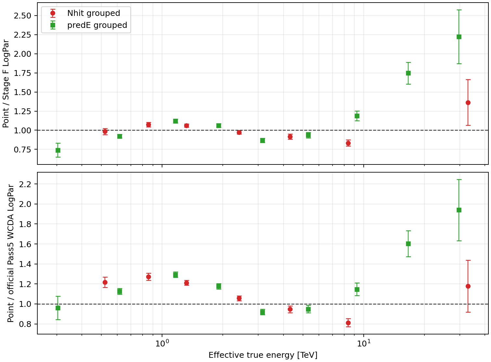
Stage C Time Audit
Stage C used /mnt/mydisk/WCDA_observation_eval_64748/recovered_time. Missing-time and entry-mismatch rows are listed below when present.
| Metric | Value |
|---|---|
| Processed files | 3,969 |
| Missing time files | 0 |
| Entry mismatch files | 0 |
| Selected rows | 113,938,262 |
| Matched MJD min | 59579.667 |
| Matched MJD max | 59760.652 |
Stage A-B-D-E Diagnostics
Stage A nominal response is primary_thrown_response; Stage F/G use primary_thrown_response under Scheme R - Double-Rayleigh PSF with Analytic B_on. Stage B wrote 91 formal PSF rows. Shared Stage B and Stage D figures are scheme-independent inputs copied into this report's asset directory. Figure labels use display IDs 1-84 after excluding the predE >= 6 tail column from numbering; stored data and metadata retain the original 91-cell internal IDs. The theta grid shows each cell's raw mc_weight-normalized distribution before Crab reweighting; orange shading marks Crab-positive theta bins without MC support. In the radial grid, purple profiles and dashed Rayleigh curves are diagnostic-only fits made without the formal true-energy cut when the formal profile is empty; they do not replace the Stage B PSF used by Stage A/F. Panels with no raw MC events are labeled explicitly. Pale green panels mark the 44 cells used by Stage F/G.


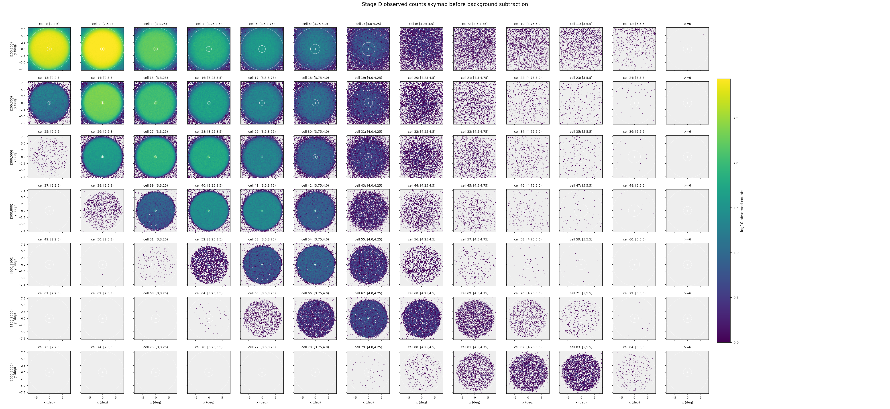
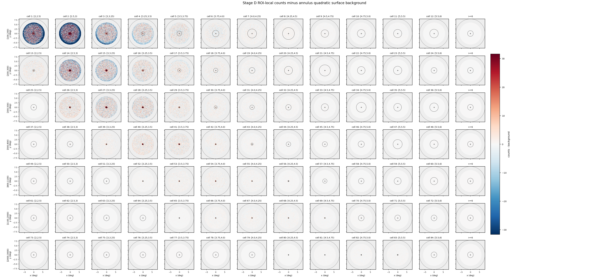


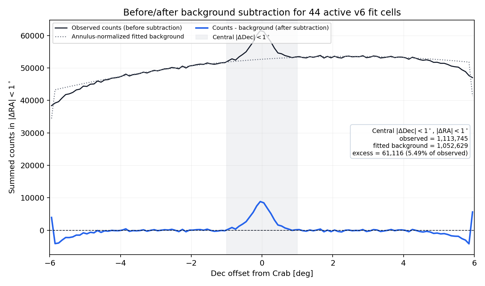
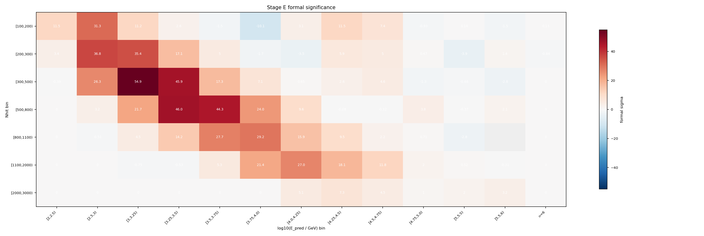
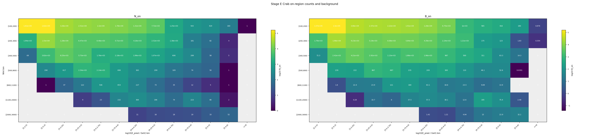
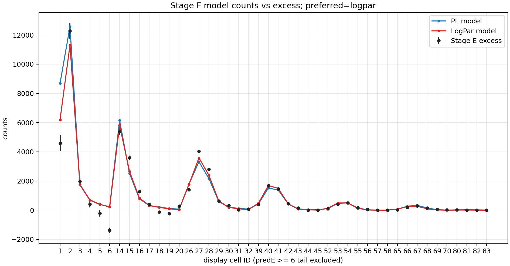
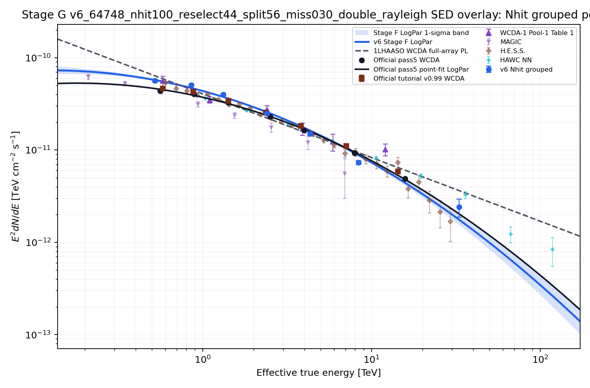
Stage F Fit
Stage F uses the frozen final selector and Scheme R - Double-Rayleigh PSF with Analytic B_on. Stage B uses the constrained double-Rayleigh PSF with F(r_opt)=0.7129790300890827. Stage D keeps the 0.1-degree annulus-quadratic fit but integrates the fitted surface analytically over the true circular aperture. Stage E uses event-level spherical N_on and containment=1. Stage F/G use Aeff_R=0.7129790300890827*Aeff_nominal exactly once. The preferred model recorded by Stage F is logpar.
| Fit | Valid | chi2/ndof | p | phi0 | gamma/alpha | beta |
|---|---|---|---|---|---|---|
| PL conservative | True | 549.7/42 | 1.166e-89 | 2.2051e-12 | 2.648 | n/a |
| LogPar conservative | True | 452.6/41 | 8.843e-71 | 2.4265e-12 | 2.761 | 0.1202 |
| PL sqrt-N | True | 907.4/42 | 5.453e-163 | 2.2229e-12 | 2.634 | n/a |
| LogPar sqrt-N | True | 718.1/41 | 1.503e-124 | 2.4690e-12 | 2.784 | 0.1428 |
Stage G SED
Stage G freezes the preferred Stage F spectrum with phi0=2.4265e-12, alpha=2.761, beta=0.1202 at 3 TeV. Quality status: passed.
| Nhit group | Cells | E_eff TeV | E2 dN/dE | Err | chi2/ndof |
|---|---|---|---|---|---|
[100,200) | 1;2;3;4;5;6 | 0.5207 | 5.6357e-11 | 2.351e-12 | 91.93/5 |
[200,300) | 15;16;17;18;19;20;21 | 0.8539 | 5.0422e-11 | 1.385e-12 | 89.57/6 |
[300,500) | 28;29;30;31;32;33;34 | 1.321 | 3.9916e-11 | 7.761e-13 | 56.14/6 |
[500,800) | 42;43;44;45;46;47;48 | 2.408 | 2.5011e-11 | 5.592e-13 | 21.38/6 |
[800,1100) | 56;57;58;59;60;61;62 | 4.32 | 1.4941e-11 | 5.562e-13 | 33.93/6 |
[1100,2000) | 70;71;72;73;74;75 | 8.372 | 7.3506e-12 | 3.644e-13 | 118.3/5 |
[2000,3000) | 86;87;88;89 | 32.97 | 2.4071e-12 | 5.280e-13 | 1.668/3 |
| PredE group | Cells | E_eff TeV | E2 dN/dE | Err | chi2/ndof |
|---|---|---|---|---|---|
[2,2.5) | 1 | 0.3036 | 4.9248e-11 | 6.051e-12 | 2.6003e-30/0 |
[2.5,3) | 2;15;28 | 0.6139 | 4.9847e-11 | 1.320e-12 | 19.96/2 |
[3,3.25) | 3;16;29;42 | 1.165 | 4.5116e-11 | 9.840e-13 | 41.77/3 |
[3.25,3.5) | 4;17;30;43;56 | 1.905 | 3.1999e-11 | 7.331e-13 | 40.03/4 |
[3.5,3.75) | 5;18;31;44;57;70 | 3.151 | 1.8258e-11 | 5.512e-13 | 72.96/5 |
[3.75,4.0) | 6;19;32;45;58;71 | 5.302 | 1.2753e-11 | 4.998e-13 | 91.03/5 |
[4.0,4.25) | 20;33;46;59;72 | 9.276 | 9.4279e-12 | 5.117e-13 | 23.56/4 |
[4.25,4.5) | 21;34;47;60;73;86 | 16.65 | 7.2751e-12 | 5.938e-13 | 21.75/5 |
[4.5,4.75) | 48;61;74;87 | 29.73 | 4.5027e-12 | 7.100e-13 | 13.05/3 |
[4.75,5.0) | 62;75;88 | 57.25 | 7.1095e-13 | 8.314e-13 | 1.854/2 |
[5,5.5) | 89 | 78.13 | 3.5271e-12 | 2.614e-12 | 0/0 |
Metadata Audit
Main-input metadata files were scanned for legacy cache/model path tokens. Status: passed.
Final v6 Fit Parameters
The preferred conservative-error fit is logpar at pivot energy 3 TeV, using dN/dE = phi0 * (E/E0)^[-alpha - beta * ln(E/E0)].
| Parameter | Best fit +/- 1 sigma | Unit |
|---|---|---|
phi0 | 2.4265421e-12 ± 3.907302e-14 | TeV^-1 cm^-2 s^-1 |
alpha | 2.761285 ± 0.0220226 | dimensionless |
beta | 0.1201833 ± 0.0154186 | dimensionless |
| Metric | Value |
|---|---|
| Fit valid | True |
| chi2 | 452.5746 |
| ndof | 41 |
| chi2/ndof | 11.03841 |
| p-value | 8.842677e-71 |
| Delta chi2 (PL - LogPar) | 97.10457 |
| Physical flux status | ok |
ok, but chi2/ndof=11.038 and p=8.8427e-71 indicate poor global goodness of fit.